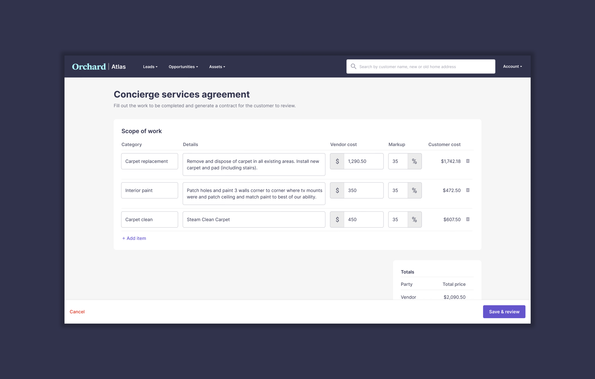
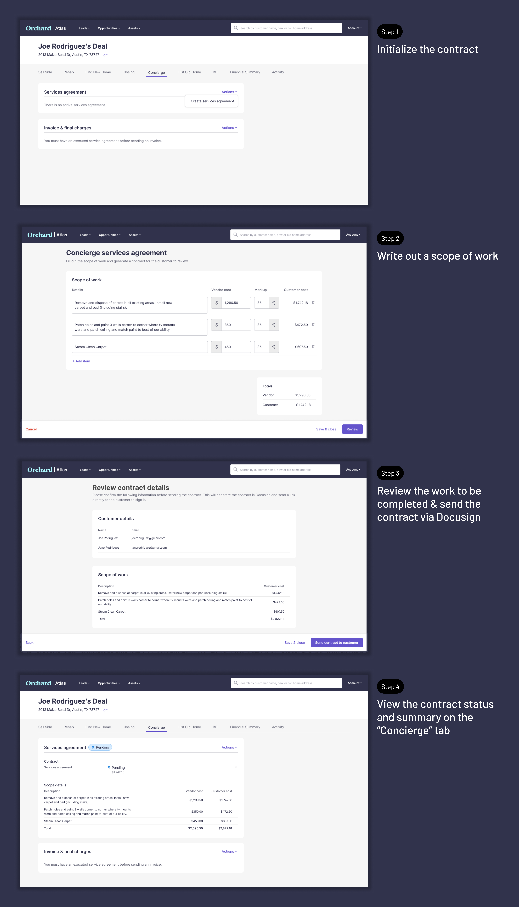

<!DOCTYPE html>
<html lang="en">

<head>
	<title>Emily Porat | Concierge</title>
	<link rel="stylesheet" type="text/css" href="styles/global.css">
	<link rel="stylesheet" type="text/css" href="styles/global-mobile.css">
	<link rel="stylesheet" type="text/css" href="styles/nav.css">
	<link rel="stylesheet" type="text/css" href="styles/projects.css">
	<script src="https://ajax.googleapis.com/ajax/libs/jquery/1.9.1/jquery.min.js"></script>
	<link rel="icon" type="image/x-icon" href="pics/favicon.svg"/>
	<!-- Icons -->
	<script defer src="https://use.fontawesome.com/releases/v5.13.0/js/all.js"></script>
	<script defer src="https://use.fontawesome.com/releases/v5.13.0/js/v4-shims.js"></script>
	<!-- Global site tag (gtag.js) - Google Analytics -->
	<script async src="https://www.googletagmanager.com/gtag/js?id=UA-119412150-1"></script>
	<script>
		window.dataLayer = window.dataLayer || [];
		function gtag(){dataLayer.push(arguments);}
		gtag('js', new Date());

		gtag('config', 'UA-119412150-1');

      // load other reused files
      $(function() {
      	$('#nav').load('http://emilyporat.com/nav.html');
      	$('#footer').load('http://emilyporat.com/footer.html');
      });
  </script>
</head>

</html>
<body class="preload">
	<meta name="viewport" content="width=device-width">
	<div id="nav"></div>
	<div id="arrow-up" onclick="slideUp()"><i class="fa fa-angle-up"></i></div>


	<div id="modal_background">
		<div id="prompt" class="pw_prompt">
		<label>Enter a password to view project:</label>
			<div>
				<input style="display: inline; margin-bottom: 0px; vertical-align:middle;" id="pw_prompt_input1" type="password"></input>
				<button style="display: inline; vertical-align:middle;" class="secondary-btn" onclick="checkPassword()">Submit</button>				
			</div>

		</div>
	</div>


	<div class="full-width" style="background-color: #31334C; color: white">
		<div class="title-wrapper animate-reveal animate-first">
			<div class="title">
				<div>
					<h4>Orchard • 2022</h4>
					<h1 style="color: white">Concierge</h1>
					<p class="p-XL">Introduced full product support for Orchard's "Concierge" renovation program.</p>
				</div>
			</div>
		</div> 

		
	</div>


	<div class="panel">
		<div class="body right">
			<div class="context-summary">

				<h2>Overview</h2>

				<p class="p-XL">
					I led research & design on the Concierge project, which introduced net new functionality to Orchard's internal platform for renovation planning, generating smart contracts, and sending invoices. 
				</p>

				<div class="space"></div>

				<div class="context-specifics">
					<div class="context-description">
						<h4>Start date</h4>
						<p>Oct 2022</p>
					</div>

					<div class="context-description">
						<h4>Release date</h4>
						<p>Jan 2023</p>
					</div>
					
					<div class="context-description">
						<h4>Team</h4>
						<p>Me, PM, Tech lead, 2 other engineers</p>
					</div> 
				</div>

				<div class="space"></div>

				<h2>Background</h2>
				<p> Orchard offers streamlined services and tooling for consumers looking to buy and/or sell their home. The Concierge program is Orchard's renovation service for customers who want to make improvements to their home before selling in order to increase list price and decrease days on market.
				</p>

				<div class="space"></div>

				<h3>Why invest in Concierge?</h3>
				<p>
					Concierge is important to Orchard's business for two main reasons:
					<ul>
							<li>It drives conversion and sets Orchard apart from its competitors, especially in a buyer's market when selling is tougher.</li>
							<li>Orchard introduced a 35% Concierge program fee and asset management fees in late 2022, which contribute to overall profitability.</li>
					</ul>
					<!-- <p>It's also a popular program; Concierge attach rates doubled from 20% in 2021 to 40% in 2022.</p> -->
				</p>

				<div class="space"></div>

		</div>
	</div>

	<div class="divider" style="background-color: var(--purple)"></div>
	
	<div class="panel">
		<div class="body right">
				<H2>Problem statement</H2>
				<p class="p-XL">Internal tooling has not improved as the Concierge program has grown in importance. Many workflows are still being done manually, which has resulted in operational inefficiency and financial losses due to human error.</p>
		</div>

	</div>

	<div class="divider" style="background-color: var(--purple)"></div>

	<div class="panel">
		<div class="body right">

				<h2>The project</h2>

				<h3>Primary users</h3>
				<p>
					<ul>
						<li>Renovation Leads (RLs) are the main user group — they are internal Orchard employees who manage Concierge projects, including scoping out the work to be done, sending contracts to customers, and ensuring the work is completed.</li>
						<li>RLs spend roughly 70% of their time in the field, visiting job sites, and 30% of their time doing computer work.</li>
					</ul>
				</p>

				<div class="space"></div>

				<h3>How were RLs managing Concierge before?</h3>
				<p>Most were using some combination of a free-text box in Salesforce, bespoke personal spreadsheets, and other external tools like Buildertrend. Because Concierge details weren't being tracked programatically, the Concierge Coordinator also had to generate invoices manually using a GSheet template.</p>
				</p>

				<div class="space"></div>

				<h3>Project scope</h3>
				<p>To define project scope, A PM and I conducted user research initially and consulted with stakeholders throughout to ensure we were solving the right problems. We streamlined the existing contract-sending tool and added net-new functionality to:</p>
					<ul>
						<li>Generate contracts</li>
						<li>Send contract amendments when the project changes</li>
						<li>View contract statuses and a summary of key details</li>
						<li>Generate invoices based on the latest contract</li>
					</ul>
				<p>See the primary contract generation user flow below:</p>
				</p>

				<div class="space"></div>
				<div class="space"></div>

				<div class="full-width-mid-page">
					<div class="panel dark" style="text-align: center; background-color: #31334C;">
						
					</div>
				</div>

				<h3>Outcome</h3>
				<p>
					The new & improved Concierge feature launched in Jan 2023 and was received very well. 
					<ul>
						<li>Operational efficiency — 100% of RLs polled post-launch said that the new product enabled them to do their job more efficiently.</li>
						<li>Accuracy — Providing product support for smart contract, amendment, and invoice generation reduces manual data entry and will result in fewer financial misses.</li>
						<li>Conversion + profitability —  RLs can now focus on selling Concierge and providing a better customer experience and less time dealing with inadequate tooling.</li>
					</ul>
					 
				</p>
				
				<div class="space"></div>

            <div class="so-what" style="background-color: rgba(160, 97, 213, .2); border-left: 10px solid var(--purple); ">
        		<h4>Want the full case study?</h4>
        		<p>Please <a href="mailto:emporat@gmail.com" target="_top">reach out directly</a> and I can share more details and designs. View selected screenshots below:</p>
        	</div> 

			</div>


		</div>
	</div>


<!-- 	<div class="full-width-mid-page">
		<div class="panel dark" style="text-align: center; background-color: #31334C">
			<div class="mid-panel-text-top">
				<h2>Primary flow</h2>	
				<p>Sending a contract to a customer</p>			
			</div>
			
		</div>
	</div> -->
	  	
  	<div id="footer"></div>
  	</meta>
  </body>

  <script src="js/general.js"></script>

</html>